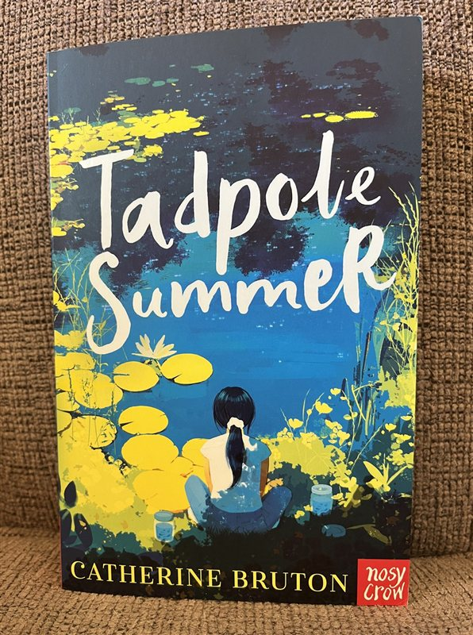

We are deeply grateful to the individuals, organizations, and supporters who have contributed their time, talent, and resources to the mission of SMA-PME Research.

We are immensely grateful to award-winning author Catherine Bruton for writing and publishing "Tadpole Summer" (2026), a children's book for readers ages 8–12 about a family whose son is diagnosed with SMA-PME. Her storytelling brings vital awareness of this ultra-rare disease to young readers everywhere.
We extend our deepest gratitude to the distinguished speakers and participants who contributed their time, expertise, and dedication to the Third Acid Ceramidase Deficiency Global Forum held on April 28, 2026. Their commitment to advancing research and fostering global collaboration brings us closer to life-saving treatments for the children we fight for.
We thank Ms. Lisa Eliot with Pampered Chef, LLC for her generous donation of valuable time, energy, and funds to support our charity during an August 2025 and all follow-on FUNdraisers.
We are deeply grateful to the distinguished speakers and all participants who contributed their time and expertise to the Second Acid Ceramidase Deficiency Global Forum.
Heartfelt thanks to the international research scientists and leaders — including American, Canadian, and researchers from around the world, as well as the French charity ASAP for Children — who participated in our inaugural global forum on acid ceramidase deficiency.
We extend our gratitude to Mark Schratz of Chandler, Arizona, who requested donations to SMA-PME Research instead of birthday gifts in January 2023.
Special thanks to the following organizations for their support of our March 27, 2022 Benefit Concert:
We are grateful to Dr. Jeffrey Medin from Medical College of Wisconsin for his consultation and website review assistance.
We extend deep appreciation to all parents of children with SMA-PME and Farber disease who have shared their children's stories on our website.
We thank our anonymous donors who made personal, private contributions — entirely separate from public charity funds — to help Adeline's family purchase essential mobility equipment, including a transport chair and electric wheelchair. Our public charity funds support all children in our community, not any single family.